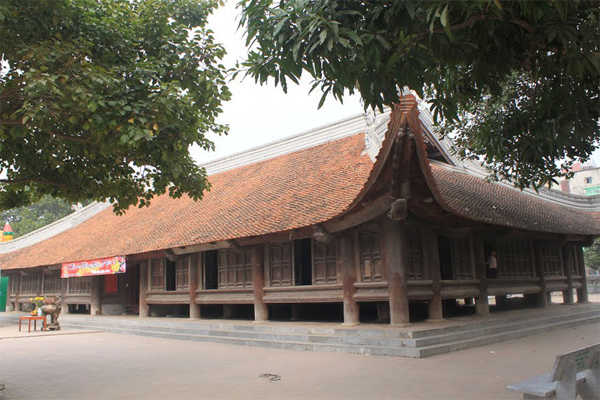
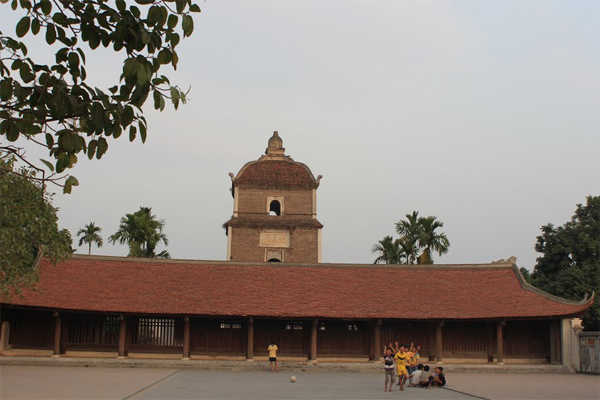
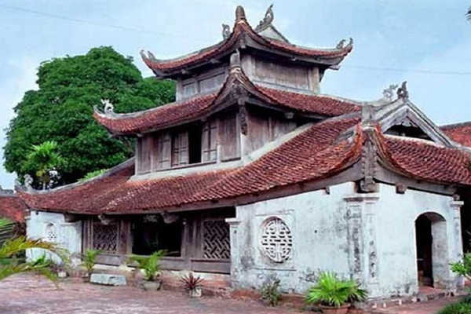
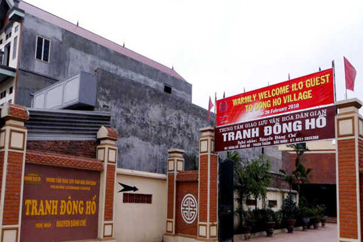
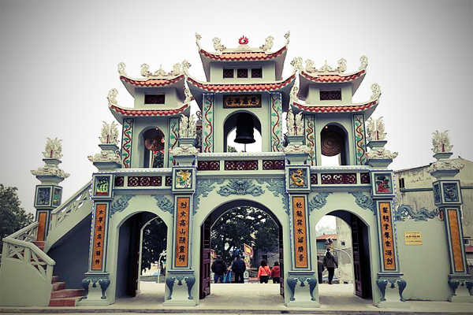
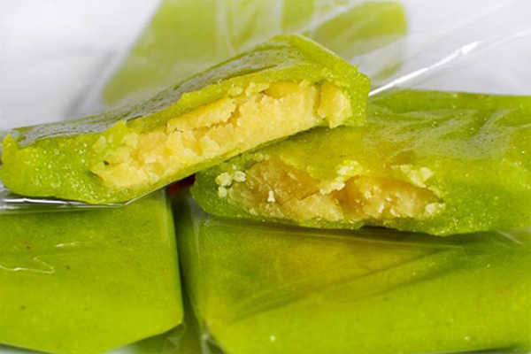
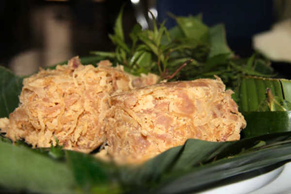
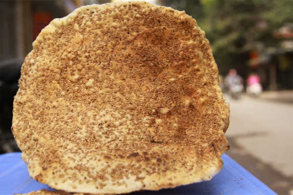
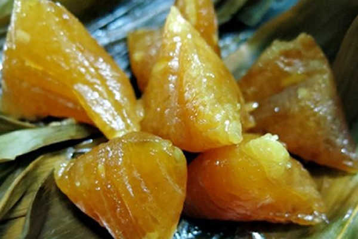

Các nhà khoa học nghiêm cứu vùng Bắc Ninh nhận thấy rằng khu vực là nơi cư trú từ mấy ngàn năm trước của người Việt Cổ. Du lịch Bắc Ninh được nhiều du khách quan tâm.
Tp Bắc Ninh nằm cách thủ đô Hà Nội 31km, là một mảnh đất nổi tiếng có nền dân ca quan họ giai điệu mượt mà đặc sắc nhất đất Bắc, một giai điệu trữ tình mà bất cứ người Việt nào cũng nhớ nhung, và rạo rực con tum. Bắc Ninh thu hút khách du lịch trong và ngoài nước với nhiều địa điểm thăm quan hấp dẫn và các di tích cổ xưa. Hãy cùng Dulichviet.net.vn khám phá vùng đất xứ quan họ này nhé.
I. Giới Thiệu Tổng Quan Về Bắc Ninh.
Bắc Ninh có vị trí ở đồng bằng và trung du Bắc bộ, được thành lập vào năm 1831, thời nhà Nguyễn. Diện tích Bắc Ninh là 823,1km2. Tỉnh lỵ là thành phố Bắc Ninh và 1 thị xã Từ Sơn, 6 huyện Gia Bình, Lương Tài, Quế Võ, Yên Phong, Tiên Du, Thuận Thành.
Cư dân gồm người Việt, Tày, Nùng, Mường… chiến phần đa số.
Bắc Ninh hội tụ nhiều dấu vết văn hoá và tôn giáo lớn. Những dấu vết còn lại về đô thị cổ Luy Lâu đã chứng minh Bắc Ninh từng là một trong những đô thị khá xa xưa, một trung tâm thương mại phồn vinh của người Việt từ thế kỷ thứ 2 đến thế kỷ thứ 10.
Vùng đất này hình thành nhiều huyền thoại thấm sâu vào tâm linh cư dân Việt xưa, nơi đã khai sinh khá sớm một vương triều họ lý và triều đại nhà Lý cũng đã khai mở nền văn minh Đại Việt, lan rộng ra một lãnh thổ trong suốt hai thế kỷ liền. Bắc Ninh đã sinh ra nhiều nhân tài trong lịch sử của đất Việt, ngoài 8 đời vua nhà Lý, qua thời Lê, triều đình có 6 vị thượng thư thì 5 người quê ở Bắc Ninh.
Bắc Ninh còn được coi là quê hương của chùa Tháp, của lễ hội và các sinh hoạt văn hoá cổ truyền. Ngày nay, còn nhiều làng nghề thủ công truyền thống nổi tiếng như làng tranh Đông Hồ, làng gỗ Đồng Ky, làng đúc đồng Đại Bái. Nhờ vậy Bắc Ninh có nhiều lợi thế đặc thù, ảnh hưởng to lớn đến loai hình văn hoá du lịch Bắc Ninh và kinh tế đại chúng, vấn đề đang được chú trọng và sẽ dần phát triển trong tương lai gần.
II. Thời Điểm Du Lịch Bắc Ninh Lý Tưởng.
Là một tỉnh có nhiều địa danh du lịch thích hợp với nhiều tháng trong năm vì vậy bạn có thể đến Bắc Ninh bất kỳ thời điểm nào, tuỳ sở thích.
Từ tháng 1 – 3: là mùa cao điểm du lịch Bắc Ninh cũng là lúc diễn ra nhiều lễ hội lớn như hội Đình Bảng, hội Lim, hội Chùa Dâu…
Tháng 4 – 5: Lúc này thời tiết đẹp, thuận tiện cho việc thăm quan ngoạn cảnh đẹp của du khách.
– Tháng 11 – 12: Là lúc cánh đồng hoa cải rực rỡ bên cánh đồng cạnh sông Đuống, nếu bạn muốn đến để chụp hình cũng là thời điểm thích hợp đấy.
III. Hướng Dẫn Đi Đến Bắc Ninh.
Thành phố Bắc Ninh nằm cách thủ đô Hà Nội tầm 31km theo quốc lộ 1A. Nằm trên quốc lộ này, Bắc Ninh là nhịp cầu từ Hà Nội nối liền với một số tỉnh Tây Bắc, Việt Bắc và Đông Bắc rất thận tiện về hệ thống giao thông đường bộ, đường sắt và cả đường thuỷ, dù rằng trong địa bàn tỉnh chỉ có một sông lớn chảy qua.
Để đi đến Bắc Ninh từ Hà Nội bạn chỉ cần mất khoảng 1 giờ di chuyển và du khách có thể chọn lựa điểm đến này để đi chơi dịp cuối tuần cùng bạn bè, gia đình với nhiều phương tiện như:
– Xe Máy: Du khách từ Hà Nội khởi hành từ Ngã Tư Sở chạy đến đường Khuất Duy Tiến, rẽ trái theo hướng bán đảo Linh Đàm, chạy lên cầu vượt rồi đi thẳng đến đường quốc lộ 1B chạy đến khi thấy bảng chào mừng Thành phố Bắc Ninh.
– Xe Bus, Xe Khách: Du khách có thể bắt xe bus, xe khách Hà Nội – Bắc Ninh với giá từ 50k – 70k, có nhiều xe chạy tuyến này trong ngày. Nếu thích đi xe bus bạn có thể bắt một số tuyến 54 tại cầu Long Biên, hoặc tuyến 203, 204 tại bến xe Lương Yên.
IV. Khách Sạn Bắc Ninh.
Vì Bắc Ninh ở khá gần với thủ đô Hà Nội, bạn có thể dể dàng đi về trong ngày. Nhưng nếu với du khách phương xa muốn cư trú qua đêm, để có thể được thăm quan du lịch Bắc Ninh một cách trọn vẹn hơn thì có thể chọn lựa một số khách sạn chất lượng tại tp Bắc Ninh sau làm chốn dừng chân.
1. Center Hotel Bac Ninh.
Là khách sạn theo tiêu chuẩn 3 sao, toạ lạc tại số 28 Kinh Dương Vương, tp Bắc Ninh. Khi ở đây du khách có thể tiện cho việc đi lại các khu công nghiệp tại Bắc ninh. Khách sạn với hệ thống 2 nhà hàng phục vụ những món ăn Á, Âu, 3 phòng họp phục vụ hội nghị, hội thảo, có quy mô 250 khách, 45 phòng nghỉ khách sạn sang trọng, đầy đủ thiết bị cùng đội ngũ nhân viên phục vụ nhiệt tình chu đáo. Tất cả mọi thứ sẽ làm hài lòng du khách.
2. Le Indochina Hotel & Spa
Là khách sạn do tập đoàn Dabaco Việt nam đầu tư và là khách sạn đầu tiên được tổng cục Du Lịch – Bộ Văn hoá Thể Thao và Du Lịch công nhận đạt chuẩn 5 sao. Khách sạn toạ lạc tại địa chỉ số 45 Nguyễn Đăng Đạo, phường Suối Hoa, tp Bắc Ninh. Bao gồm những phòng nghỉ sang trọng, thiết kế độc đáo, bên trong là những nội thất cao cấp.
Khi các doanh nghiệp nước ngoài đến tp Bắc Ninh để đầu tư vẫn thường chọn nơi đây là điểm dừng chân nghỉ dưỡng và tổ chức các cuộc đàm phán quan trọng. Nhân viên phục vụ trẻ trung nhanh nhẹn, phục vụ chu đáo sẽ đáp ứng mọi nhu cầu của khách du lịch Bắc Ninh.
3. Tu Son Luxury Hotel
Là một khách sạn được thiết kế theo chuẩn 3 sao, dịch vụ phục vụ chất lượng toạ lạc tại số 46 khu vườn Hoa đường Lê Hồng Phong, phường Đông Ngàn, thị xã Từ Sơn.
Với vị trí đẹp gần khu công nghiệp, địa điểm du lịch nổi tiếng tại Từ Sơn. Khách sạn Tu Son Luxury là sự lựa chọn lý tưởng cho du khách. Khi cư trú tại đây bạn sẽ được trải nghiệm những dịch vụ hiện đại, sang trọng trên một diện tích rộng lớn. Khách sạn sẽ mang lại sự tiện nghi và thoả mái cho du khách.
4. Muong Thanh Luxury Bac Ninh Hotel
Là một khách sạn 5 sao nổi tiếng, toạ lạc tại số 35 Ngô Gia Tự, phường Tiền An, tp Bắc ninh. Khách sạn này cung cấp wifi miễn phí, lễ tân phục vụ chu đáo.
Khách sạn đều có khu vực tiếp khách, tivi màn hình phẳng, kênh truyền hình cáp, phòng tắm riêng. Mỗi phòng đều có ban công, tủ lạnh, máy lạnh, bàn làm việc. Khi ở khách sạn Muong Thanh Luxury du khách sẽ được trải nghiệm cuộc sống thư giãn tốt nhất. Bữa sáng kiểu châu Á được phục vụ mỗi ngày. Khách sạn được nhiều khách du lịch Bắc Ninh chọn làm điểm nghỉ dưỡng lý tưởng.
V. Địa Điểm Du Lịch Bắc Ninh Không Thể Bỏ Qua.
Sau khi đã có chổ ở ổn định, sáng ngày hôm sau du khách có thể hành trình khám phá Bắc Ninh. Dưới đây là một số điểm thăm quan hấp dẫn cuốn hút nhiều du khách, bạn có thể lên trước lịch trình để được khám phá hết nơi này.
1. Đình Bảng.

Là một ngôi đình cổ kính nổi tiếng nằm ở làng Đình Bảng, thị xã Từ Sơn. Sự độc đáo của ngôi đình là kiến trúc cổ, được xây vào thế kỷ 18 và làm bằng gỗ. Nhờ sự bảo quản tốt nên đến nay đình vẫn còn nguyên vẹn. Khi đến thăm quan Đình Bảng du khách sẽ cảm nhận được vẻ đẹp cổ kính mang đậm dấu ấn xa xưa. Hiện đình làng này là điểm đến hàng đầu trong tour du lịch Bắc Ninh của nhiều đơn vị.
2. Đền Đô.
Là một ngôi đền cổ, được xây từ đời vua Lý Công Uẩn, toạ lạc tại làng Đình Bảng, thị xã Từ Sơn. Đền đón lượt du khách đến thăm quan đông nhất vào thời điểm diễn ra lễ hội giữa tháng 3 âm lịch, thu hút du khách thập phương. Đền được xây dựng trong một khuôn viên rộng với những khu: đại điện, hậu cung, thuỷ đình, văn bia là điểm lý tưởng để du khách đến thăm quan, tìm hiểu văn hoá người dân tộc ta từ xưa.
3. Chùa Phật Tích.
Là một công trình kiến trúc độc đáo, nằm trên núi Lạn Kha, xã phật Tích, huyện Tiên Du. Là một ngôi chùa có lịch sử lâu đời, được các kiến trúc sư thời lý thiết kế. Khi thăm quan chùa Phật Tích du khách sẽ thấy giữa chùa là pho tượng phật bằng đá xanh ngồi thiền định trên toà sen, cao 1,85m, phía sau chùa là khu bảo tháp với 32 ngọn tháp lớn nhỏ, toà cao nhất là Phổ Quang.
4. Chùa Dâu.

Là ngôi chùa nổi tiếng nằm ở xã Thanh Khương, huyện Thuận Thành. Nơi đây là trung tâm khu di tích lịch sử văn hoá xứ Kinh Bắc gồm nhiều di tích cổ kính như: đền thơ, lăng mộ Sỹ Tiếp, thành cổ Luy Lâu, chùa chiền, đền đài, dinh thự, bảo tháp… Nhiều du khách đến với chùa Dâu không chỉ để cầu an mà còn để được chiêm ngưỡng ngôi chùa cổ nhất tại Việt Nam với mệnh danh là “đệ nhất cổ tự trời nam”.
5. Chùa Bút Tháp.

Là một ngôi chùa nổi tiếng tại xứ Kinh Bắc. Toạ lạc bên đê hữu ngạn dòng sông Đuống, huyện Thuận Thành. Khi vào bên trong chùa du khách sẽ thấy ngỡ ngàng với kiến trúc đẹp, bên cạnh đó là tượng phật bà Quan Âm nghìn mắt, nghìn tay lớn nhất nước ta.
Chùa Bút Tháp được xây dựng trong một khuôn viên rộng lớn, quy mô hoàn chỉnh nhất được bảo tồn nguyên vẹn đến ngày nay.
6. Làng Tranh Đông Hồ.

Với nhiều người dân Việt Nam, tranh Đông Hồ từ lâu đã đi vào ký ức tuổi thơ, những tác phẩm được ghi chép trong những bài văn cấp 1, 2 như tranh hứng dừa, đám cưới chuột,… Làng Tranh Đông Hồ là địa điểm thu hút nhiều du khách thăm quan. Thuộc địa phận xã Song Hồ, huyện Thuận Thành, cách Hà Nội 35km. Đây là địa điểm bạn có thể tìm hiểu về quy trình làm nên một tác phẩm nghệ thuật đặc sắc lưu truyền nhiều thế hệ.
Ngoài Làng Tranh Đông Hồ ra du khách có thể ghé thăm quan đình làng Cổ Mễ, ở phường Vũ Ninh là một ngôi đình lớn xây dựng năm 1681, đình làng Điềm, ở thôn Viên Xá, xã Hoà Long, huyện Yên Phong.
7. Đền Bà Chúa Kho.

Đền bà Chúa Kho từ lâu đã nổi tiếng khắp đất nước Việt Nam. Toạ lạc tại lưng chừng núi Kho, phường Vũ Ninh, tp Bắc Ninh. Ngôi đền linh thiêng thờ thánh Mẫu, luôn được nhiều người dân đến thắp nhang, cầu tài, lộc.
Đầu năm nhiều du khách khắp nơi tề tựu về đây cầu một năm làm ăn phát đạt và đây là một trong những địa điểm thu hút nhiều khách du lịch Bắc Ninh nhất.
VI. Đặc Sản Bắc Ninh.
Đi du lịch Bắc Ninh thưởng thức những món ăn ngon là điều nhiều du khách mong muốn. Dưới đây là một số món ăn hấp dẫn bạn nên thưởng thức khi đến với vùng đất xứ Kinh Bắc này.
1. Bánh phu thê Đình Bảng.

Là món ăn độc đáo được làm từ những nguyên liệu đời thường như hạt đỗ, đu đủ, nếp. Được bọc bởi lá dong rồi luộc lên. Khi ăn bạn sẽ thấy độ dẻo của nếp, giòn của đu đủ, ngậy của đỗ, béo của dừa, bùi của sen và ngọt của đường. Dưới bàn tay điệu nghệ của người thợ làm bánh Kinh Bắc những trong món bánh Phu Thê có sự hoà quyện của nhiều nguyên liệu hình thành một hương vị rất riêng của bánh.
Nhân bánh hình tròn nằm trong vỏ bánh bẻ khuôn hình vuông lá dừa. Biểu tượng vuông tròn của triết lý âm dương. Người làm bánh dàn mỏng bột lên khuôn, đắp nhân vào một đầu rồi đắp phần bột còn lại lên nhân thể hiện sự ôm ấp, che chở của tình cảm phu thê.
2. Nem Bùi Ninh Xá

khi du lịch Bắc Ninh đến đoạn Cầu Hồ – Thuận Thành bạn sẽ thấy nhiều nơi bán món nem. Khi mua về ăn nem và uống một cốc bia giữa ngày hè oi bức sẽ hấp dẫn vô cùng.
Từ lâu món nem Ninh Xá đã trở thành đặc sản Bắc Ninh. Sự hấp dẫn của món nem Bùi Ninh Xá giúp cho nhiều người mua và nó trở thành nguồn thu nhập lớn của người dân địa phương.
Để làm được món nen trứ danh này, bạn phải lấy thịt từ phần hông con lợn. Phần thịt nạc và thịt mỡ để sống, chỉ để riêng phần bì rồi luộc chín, thái nhỏ, nêm gia vị tỏi ớt, bột ngọt trộn với thính nóng, để chín thịt, sau cùng cắt nem thành từng miếng nhỏ gói gọn trong lá chuối.
3. Bánh Đa Kế.

Là món ăn dân dã nhưng chứa đựng hương vị đậm đà quê hương xứ kinh Bắc. Khi thưởng thức món bánh Đa kế vàng bóng, vị bùi, thơm mùi lạc vừng, khoai lang… Khiến cho du khách không thể nào quên.
Khi du khách đến từ các nước: Nga, Nhật, Singapore… đến thăm quan đền Dĩnh kế, được thưởng thức món bánh Đa kế đã mua về làm quà và món này được cộng đồng quốc tế biết đến là món đặc sản Bắc Ninh nổi tiếng.
4. Bánh tro Đình Tổ

Là món ăn dân dã được làm từ gạo nếp, nước tro, ít vôi. Bánh được gói lại trong lá chuối hoặc lá dong và mật mía. Để có được nước tro trong, múi thơm nhẹ người đầu bếp dùng rơm nếp đốt lấy tro, đổ tro vào chậu, hoà quyện cùng nước vôi để lắng nước trong, lấy nước trong, bỏ cặn. Gạo nếp được vo sạch, ngâm 3, 4 giờ, vớt ra, để nước ráo. Lá chuối, lá dong được rửa sạch, hấp chín mền, lau khô để gói bánh.
Khi tinh tuý trong bánh tro là có vị thanh mát, ngọt ngào, mềm. Khi thưởng thức bánh tro một lần sẽ khiến bạn còn mãi dư vị đặc trưng của bánh.
Ngoài những địa danh du lịch Bắc Ninh hấp dẫn và những món ăn đặc sản Bắc Ninh đặc sắc, Bắc Ninh còn nhiều điều bí ẩn về văn hoá đang chờ bạn đến khám phá. Hãy cùng đồng hành cùng Du Lịch Việt nhé!